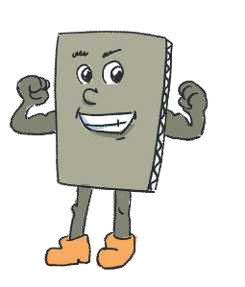

TEMATIKA 1: MATERIALET DHE PËRPUNIMI I TYRE2. Dita dhe Dielli në punëtori
Tani radhën e ke ti
Ndihmë: si të punoj?
Zgjidh një kartë, pastaj zgjidh kutinë ku duhet të shkojë. Për ta nxjerrë kartën nga kutia, zgjidhe përsëri. Kur të mbarosh, shtyp butonin “Dërgo”.
1.
Në punëtorinë e xhaxhi Burimit, letra dhe kartoni janë duke biseduar. Ndihmo letrën dhe kartonin, që të paraqesin shpejt dhe drejt vetitë e tyre. Nëse njëri i merr tjetrit ndonjë veti, ata mund të grinden. Por ata pajtohen, sepse disa veti i kanë të përbashkëta.
Vendos secilën veti në kutinë e duhur: vetitë e letrës, vetitë e përbashkëta ose vetitë e kartonit.

Digjet
I/e errët
Riciklohet
I/e hollë
I/e trashë
I/e butë
Përthyhet
I/e shkëlqyeshëm/e
I/e fortë
Laget
I/e rëndë
Vetitë e letrës
Vetitë e përbashkëta
1. Prodhohen nga druri.